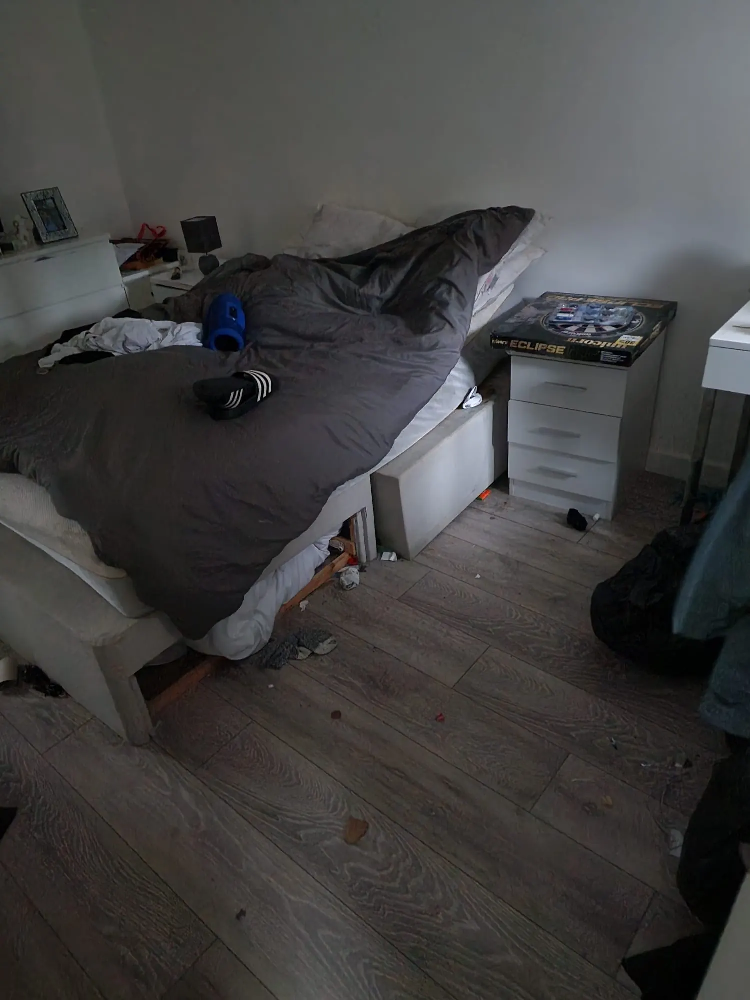
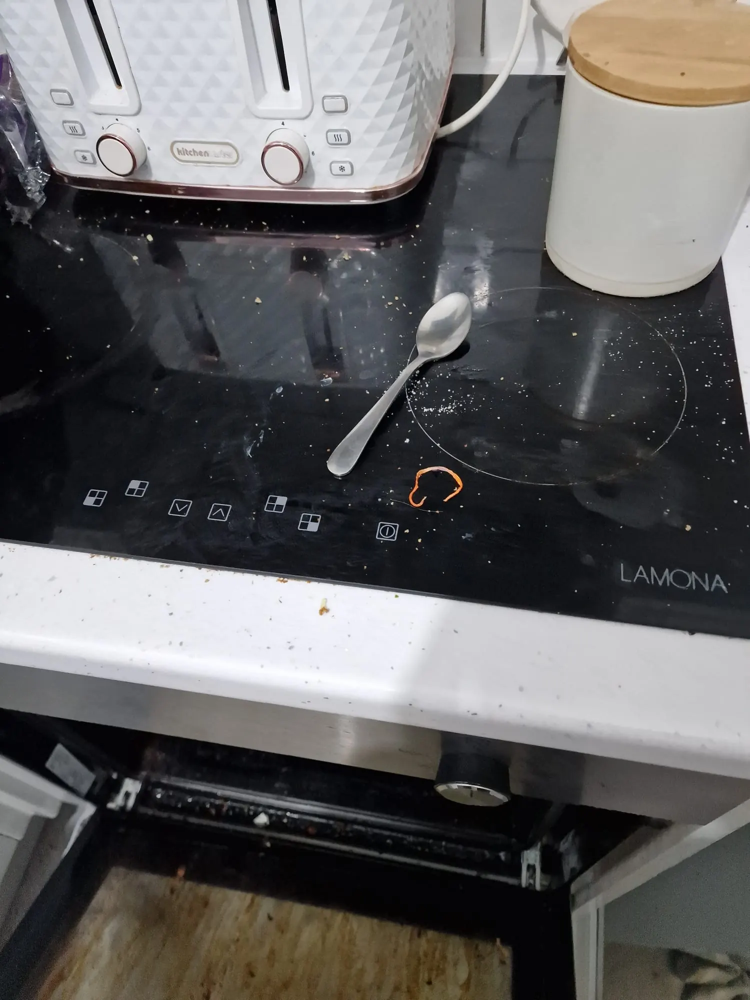
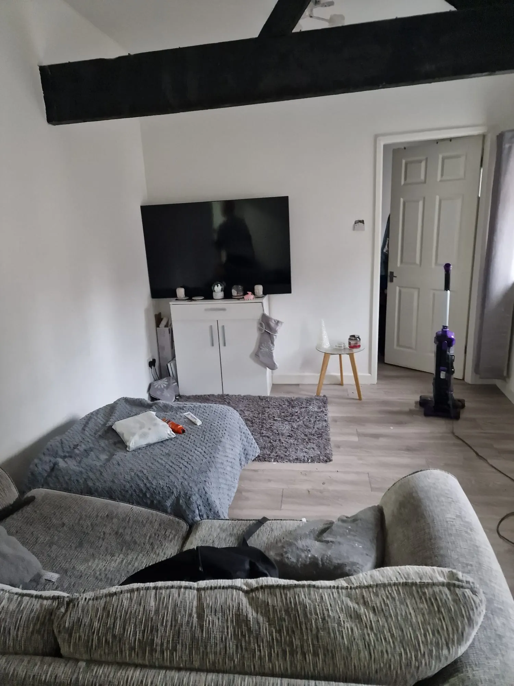
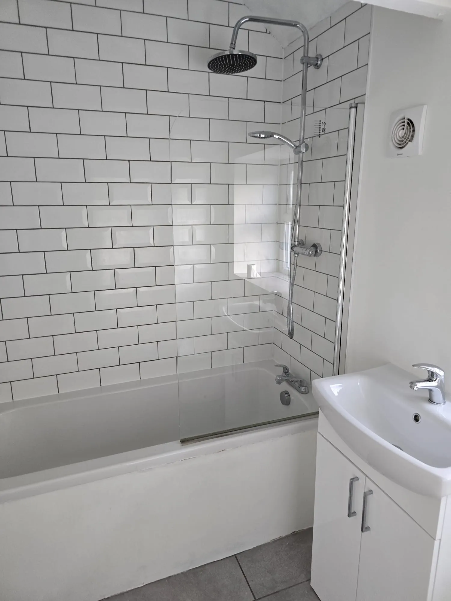
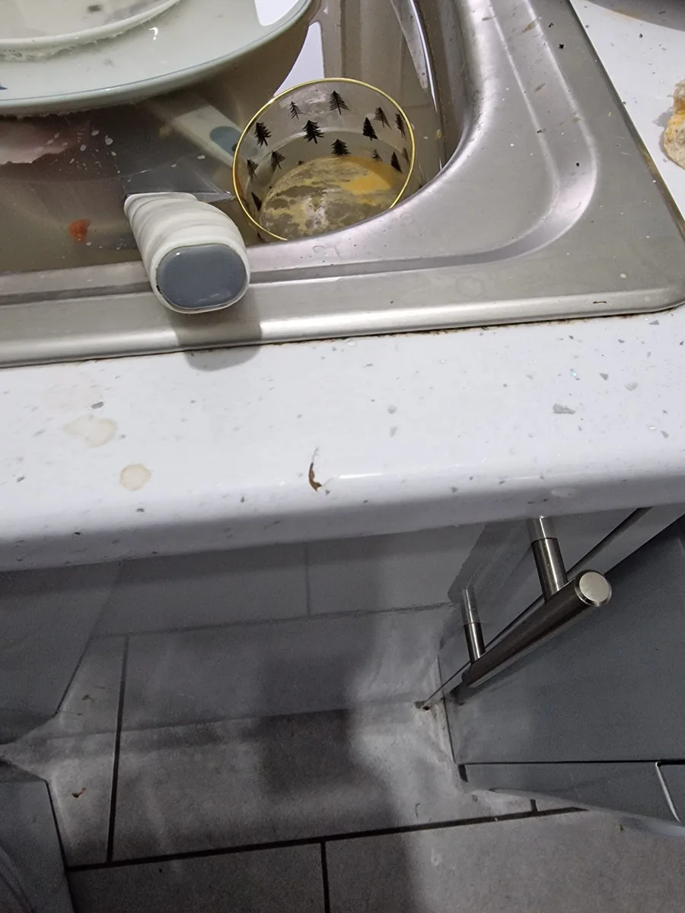
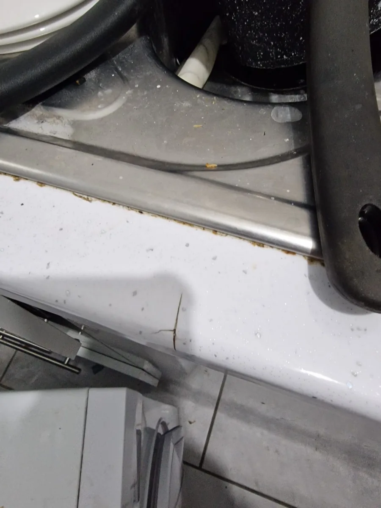
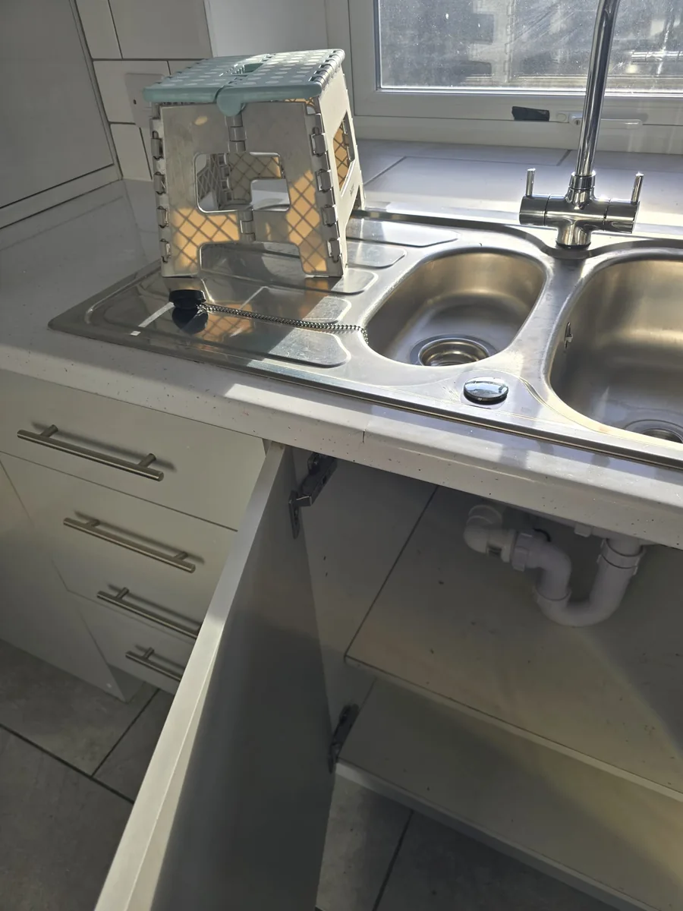
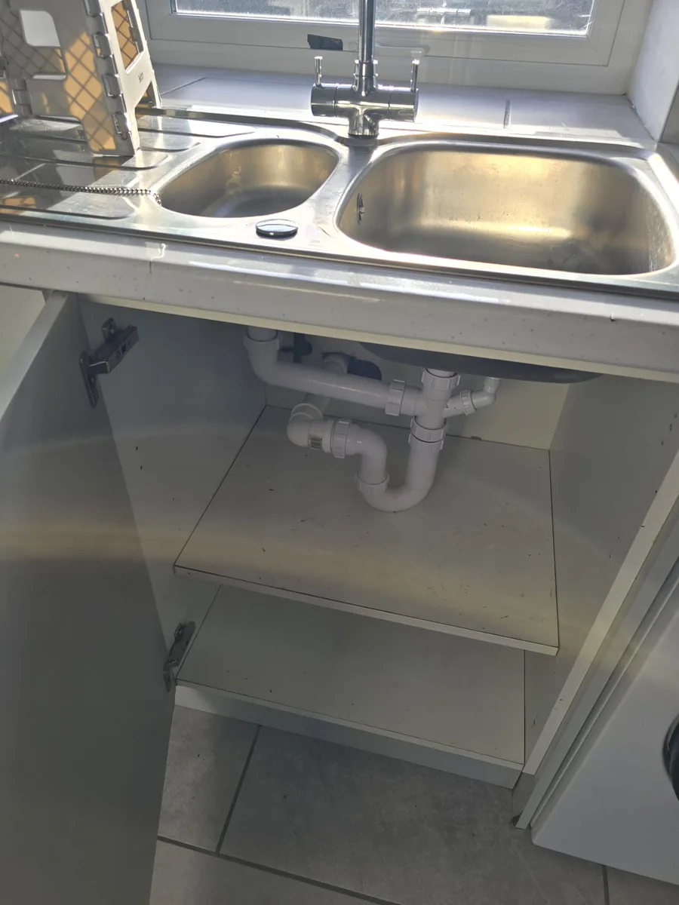

Void turnaround case study
Main Street: clearance and deep clean between tenancies
A focused property reset beginning with documented post-tenancy condition and moving through removal, clearance and detailed cleaning.

Condition captured
Start with a usable record
The supplied photographs record left items, dirty appliances and marked or damaged-looking surfaces. Capturing condition creates a basis for separating clearance, cleaning and any repair decisions.


Clearance and clean
Remove what is left and work through the details
The turnaround included clearing rooms and cleaning kitchen, appliance, floor, bathroom and sink areas. Repair or replacement decisions remain separate from cleaning.

Ready for the next decision
A clearer property and a clearer onward list
Once rooms and appliances are accessible and clean, the remaining repair, safety or presentation items can be assessed without the original clutter obscuring them.


Images document the supplied before-and-after condition. No claim is made here about deposit decisions, compliance status or work outside the photographed scope.
This is the type of between-tenancy work covered by our void property turnaround service in Nottingham, with void and end-of-tenancy cleaning used as one stage of the wider reset where appropriate.
Kitchen detail sequence
Post-tenancy condition to cleared and deep-cleaned stage
These four supplied photographs document specific kitchen details before and after the clearance and cleaning stage. They do not imply that damaged finishes were repaired.




The sequence records visible condition and cleaning progress only. It does not claim repair of marked or damaged worktop finishes.
Have a void property to reset?
Send the checkout report, photos, postcode and target date.